Aeonics Quick Start
Introduction
This documentation describes the first steps to install the system and connect to the management interface. The estimated time for installation and first connection on the running system is about 5 minutes.
The information contained in this documentation is provided as-is without any guarantee of correctness nor any other sort, it is provided in good faith and is regularly checked and updated. If some content is not clear, outdated or misleading, please let us know and we will try to fix it. Some fine internal details are voluntarily omitted from this guide, if you need more information about a specific aspect, please contact us.
Initial setup
Requirements
Aeonics is a standalone application that runs on top of the JVM. Therefore, it can be deployed on any operating system and any virtualization technology that is supported by the JVM.
The base requirements are:
- Runtime: Java 11. Different version including and up to Java 23 are also supported.
- Disk space: minimum 10MB
- Memory: minimum 128MB RAM available for the JVM to start, minimum 16MB heap space for Aeonics to run
- Network: port 443 should be open to use the web interface
- Privileges: Aeonics should be run using an account able to start the web server on port 443 and should have full privileges on its own disk location to manage files internally.
There are no further requirements in terms of processing power, Aeonics will use the available resources from the system. The performance of the system will depend on the number of available (v)CPU and their clock frequency. The recommended processing power for a baseline system is 2 (v)CPU @2GHz.
Additional storage, databases or network connectivity may be necessary depending on your business logic, those are not part of the base requirements.
Installation
Aeonics can be run from any location and does not require any installation per-se. The system is distributed as an archive file (usually a compressed tar file) or can be compiled from source.
Deployment procedure on Red Hat, Debian, Ubuntu, Linux, Mac OS and other Unix-based systems:
- It is recommend to download and use a fresh Java runtime so that Aeonics is not affected by the default one and can be upgraded easily.
Place it in a folder named
jre.$ mkdir /opt/aeonics $ wget https://download.oracle.com/graalvm/23/latest/graalvm-jdk-23_linux-x64_bin.tar.gz $ tar -xzf graalvm-jdk-23_linux-x64_bin.tar.gz $ mv graalvm-jdk-23.0.1+11.1 /opt/aeonics/jre
- Uncompress the Aeonics archive.
$ tar -xzf aeonics.tgz -C /opt/aeonics
- Install Aeonics as a systemd service and review the
aeonics.envfile.$ systemctl enable /opt/aeonics/aeonics.service
- Start the Aeonics service.
$ systemctl start aeonics
Deployment procedure on Windows:
- Uncompress the Aeonics archive to a location accessible to your operating system.
> mkdir D:\aeonics > tar -xzf aeonics.tgz -C D:\aeonics
For older Windows version, decompress the archive manually. - Start Aeonics using the standard Java command.
> cd D:\aeonics > java --module-path ae.jar --module aeonics.boot/aeonics.Boot
- Out of scope: Install Aeonics as a service.
File structure
The Aeonics deployment directory contains a set of files and folders by default. Those can be modified at runtime using environment parameters or command line parameters.
- ae.jar : this is the boot loader of the Aeonics system
- plugins : this folder is used as the default location for all plugins
- security : this folder is used as default storage for various security-related data. This directory will be created automatically.
- snapshots : this folder is used as default storage for snapshots of the system. This directory will be created automatically.
- stats : this folder is used as default storage for usage statistics of the system. This directory will be created automatically.
- www : this folder is used as default location for static web applications and assets
These directories are default used from a vanilla installation. They can be reconfigured at runtime if necessary. Some additional modules may use other folders or files. Custom storage locations or custom behavior may also use other files from the filesystem.
Environment parameters
The Aeonics system will automatically look for some parameters at boot time.
- The system will first check the Java properties passed with the
-Dkey=valuecommand line parameters - If a value is not present, the system will check the local environment parameters
- Finally, if a value is still not present, a default value is set
- After startup, if a snapshot exists, all parameters are overwritten with the snapshot value
The list of startup parameters is the following:
- AEONICS_PLUGIN_PATH : the path to the plugins directory. The default value is
plugins. This parameter is required regardless of any snapshot as it is used before system startup. - AEONICS_MANAGER_LOGGER_LEVEL : the default log level before loading the custom config.
The default value is
700. - AEONICS_MANAGER_SNAPSHOT_PATH : the default path to the snapshot storage location. The default value is
shapshots. - AEONICS_MANAGER_SNAPSHOT_CURRENT : the name of the snapshot to load on startup. If not set, the latest snapshot is loaded. The default value is not set.
- AEONICS_SECURITY_ADMIN_HASH : the unique password hash of the admin user. This parameter does not have a default value. If it is not specified, it will be generated at first startup. If this parameter is provided as command line parameter, then it will be cleared and the rest of the application will not have access to it. If it is set as an environement variable, then the value will be visible anywhere in the application.
- AEONICS_SECURITY_ADMIN_SALT : the unique salt used to hash the admin password. This parameter does not have a default value. If it is not specified, it will be generated at first startup. If this parameter is provided as command line parameter, then it will be cleared and the rest of the application will not have access to it. If it is set as an environement variable, then the value will be visible anywhere in the application.
- AEONICS_SECURITY_VAULT_SALT : the unique salt used to hash secure secrets in the Vault manager. This parameter does not have a default value. If it is not specified, it will be generated at first startup. If this parameter is provided as command line parameter, then it will be cleared and the rest of the application will not have access to it. If it is set as an environement variable, then the value will be visible anywhere in the application.
- AEONICS_MANAGER_SECURITY_OIDCISSUER : the url prefix to connect to your instance.
The default value is
https://localhost. If this parameter is misconfigured, you will not be able to login. You may use the IP address of the machine or a domain name and specify the port if not using standard443.
Any other configuration parameter from the system can be initialized using the same technique and will be available
during the lifecycle LOAD phase.
First login
The system is ready once the lifecycle RUN phase has completed.
If an error happens during the startup, it will be displayed according to the default log level.
If you did not specify both AEONICS_SECURITY_ADMIN_HASH and AEONICS_SECURITY_ADMIN_SALT in absence of any previous
snapshot, then a new admin password will be randomly generated and it will be displayed in the console.
****** CAUTION ******
No default admin user hash/salt were provided. A new password was generated:
5a99853ab703261e02e834ebfa537bed897bfa9cd5811d30bce02dde24d26597
To reuse this password without snapshot, use these command line arguments:
-DAEONICS_SECURITY_ADMIN_HASH=663d6ac944431aa2675937b8faebb9405e11f99af61b1cfc7c745f33f192d202
-DAEONICS_SECURITY_ADMIN_SALT=a9fc1ad7cd570b97f6d7fd3022f1d07209c0c1dd7732aaeb42c6f193d537a3da
You can then use your browser and navigate to the address https://[host]/admin to access the Aeonics management interface.
The initial username is admin and the password is the one provided.
Note that any administrator user will be required to enroll with multifactor authentication.
Management Interface
This section describes the management web interface. It is available by default when the system starts, you can use your browser and navigate to https://[host]/admin.
Login screen
In order to use the management interface, you need to authenticate with an administrator account. Clicking on the login button will redirect you to the centralized authentication system.
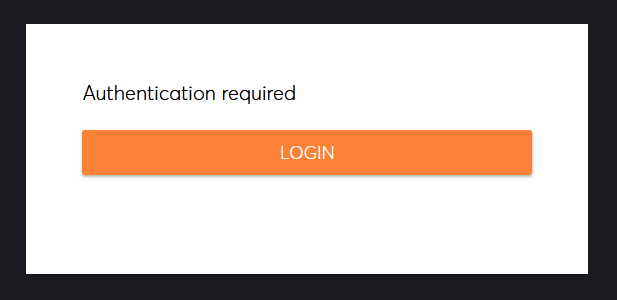
When the authentication fow starts, you have 3 minutes to complete, there is a countdown timer at the bottom of the dialog window.
If you are already signed-in, you can reuse an existing session, otherwise you can start a new authentication flow.
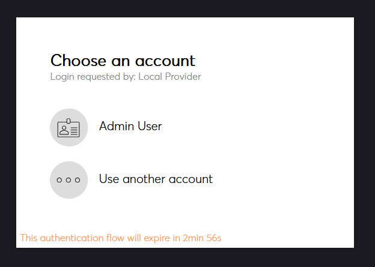
The first step is to choose an authentication provider. There might be multiple options depending on your setup. The Local identity provider is the default one.
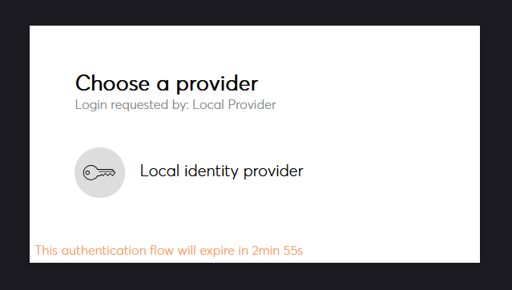
The default security provider is password based. This can vary depending on the type of provider (OpenID,...).
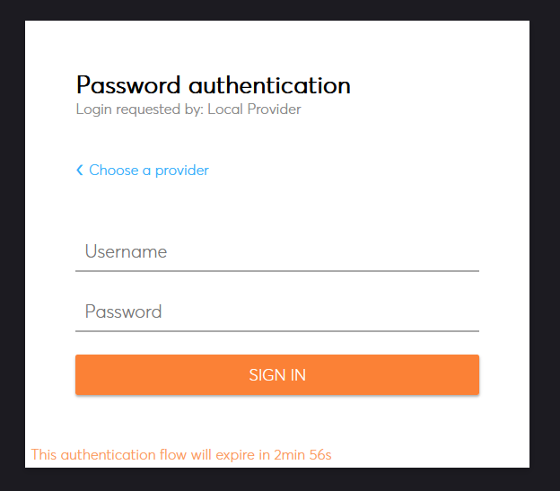
If you are an admin and you did not yet enable multifactor authentication, you must do it before proceeding. You can use any standard authenticator app that supports Time-based One Time Password (TOTP).
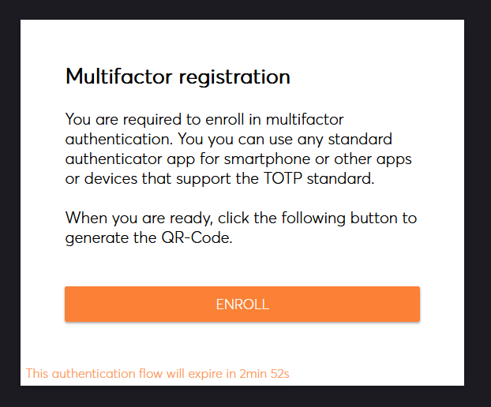
You then have to provide your multifactor authentication code.
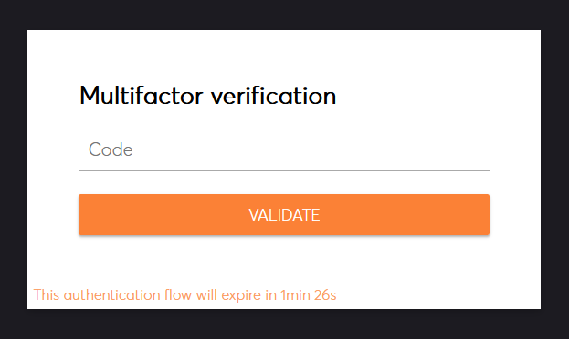
Since the system can be configured using external identity providers, you will be prompted for consent if not done already.
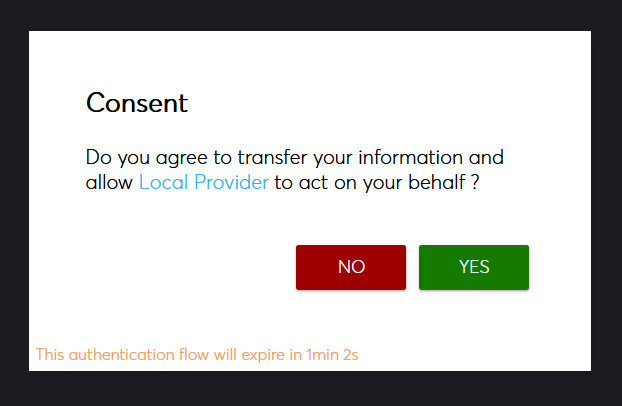
After giving consent, you will be redirected to the management interface application. In case of error, you will be redirected to the error page. For your safety, the login flow does not provide second-guesses, close your browser and start again.
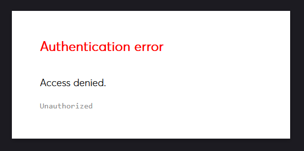
Layout
The management interface is composed of a menu on the left, and a main display area in the center. If you hover the menu icons, the menu expands to display the labels.
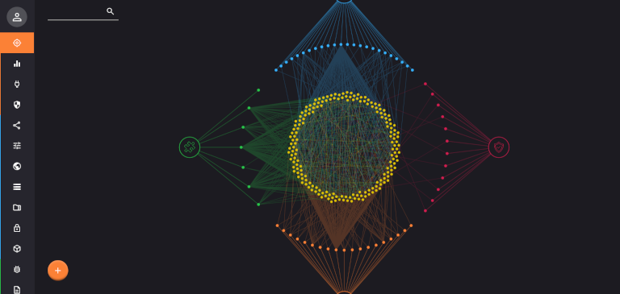
There are 3 categories of pages available, they are identified by a thin colored border on the left of each menu element. The orange category relates to informational and visualization pages. The blue category relates to actionable configuration pages. The green category relates to live data capture.
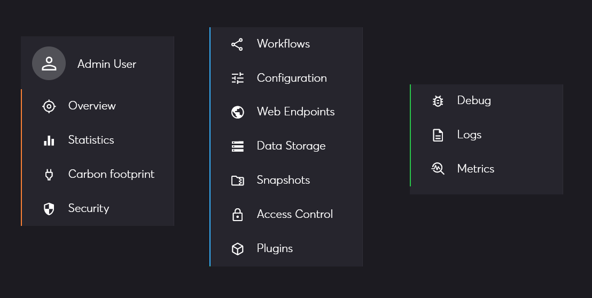
Notifications will appear in the bottom left corner of the page as an indication. Notifications disapear after a few seconds unless you hover them with the mouse. There are 4 types of notifications: success, warning, info and error.
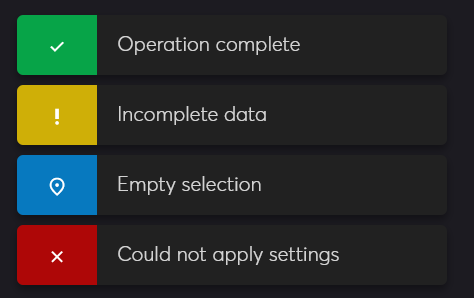
When an action is in progress, a busy indicator is displayed. Normally operations should complete in seconds. If the busy indicator remains for a longer period, it could mean something went wrong and a notification should mention it.
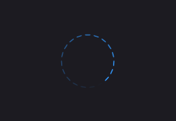
Across pages, you may encounter references to entities. Those are presented as a blue link composed of 24 hexadecimal numbers. If you click on it, you will be redirected to the overview page to inspect that particular item.
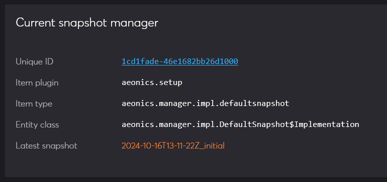
Pages
The management interface contains different pages accessible from the menu. Each page is detailed separately:
- Current user: provides information about the current logged user.
- Overview: gives the possibility to explore all entities in the system.
- Statistics: displays various performance indicators.
- Carbon Footprint: computes the carbon footprint of the system.
- Security: evaluates the security exposure of the system.
- Workflows: design data processing workflows.
- Configuration: manage system-wide configuration parameters.
- Web Endpoints: manage and create web endpoints.
- Data Storage: configure databases and data storage locations.
- Snapshots: manage system snapshots.
- Access Control: define security policies.
- Plugins: deploy and manage plugins.
- Debug: collecto live debug information from the system.
- Logs: collect logs in real time.
- Metrics: collect internal system metrics.